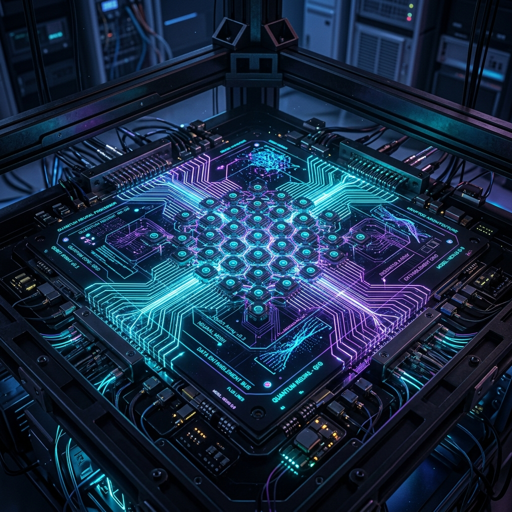

// GN2 TELEMETRY
DEVIATION: ZERO-G STATE
SYS.LATENCY:24ms
GRAVITY.COEF:0.0092 G
ENGINEERING.V:v4.0.9
SYSTEM.STATUS:60 FPS
COORDINATE MAPPING
QUANTUM TELEMETRY CORE ACTIVE. INTERACT WITH FLOATING NODES TO DISCOVER CORE METRIC CHANNELS.
DEFYING GRAVITY THROUGH
TECH & BUSINESS
1st Year MBA Tech Computer Engineering at NMIMS Shirpur — charting a course where code meets corporate strategy, one orbit at a time.
Analyzing the architectural intersection of engineering engineering structures and executive corporate strategies.
Developing complex, low-latency code modules and structural framework architectures. Transforming computational models into scalable digital products.
Designing valuation algorithms, financial models, corporate growth funnels, and managing operations structures to drive systemic organizational efficiency.
Bento-styled capsules storing engineering models, market algorithms, and product deployment assets.

Built an optimized vector processing simulation pipeline for calculating quantum spin states inside complex neural grid arrays. Utilized C++ custom kernels and optimized visual web shaders in React.
An interactive dashboard tracking neural predictions for financial charts. Built backtesting engines comparing business market capitalizations.
Designed decentralized system architecture routing active server telemetry through encrypted client tunnels, maximizing security and scalability.
Chronological audit logs tracking corporate ventures, system deployments, and academic training nodes.
NMIMS University, Shirpur
CLICK TO INITIALIZE INTERSECT LOG
NMIMS Student Division
CLICK TO INITIALIZE INTERSECT LOG
Futuristic Tech Labs
CLICK TO INITIALIZE INTERSECT LOG
[SYSTEM@LOGS] > INITIATING DIRECTORY SYNERGY LOGS...
Click a timeline node on the left telemetry stream to mount corresponding logs into terminal buffer storage.
_
Send encrypted packet data directly to telemetry log storage. The system will broadcast a ping back automatically.
STATUS: PACKET RECEIVED AT ORBITAL LOG SENSOR
Your transmission packet has bypassed gravity nodes and synced directly with our database logs. A response ping will launch shortly.